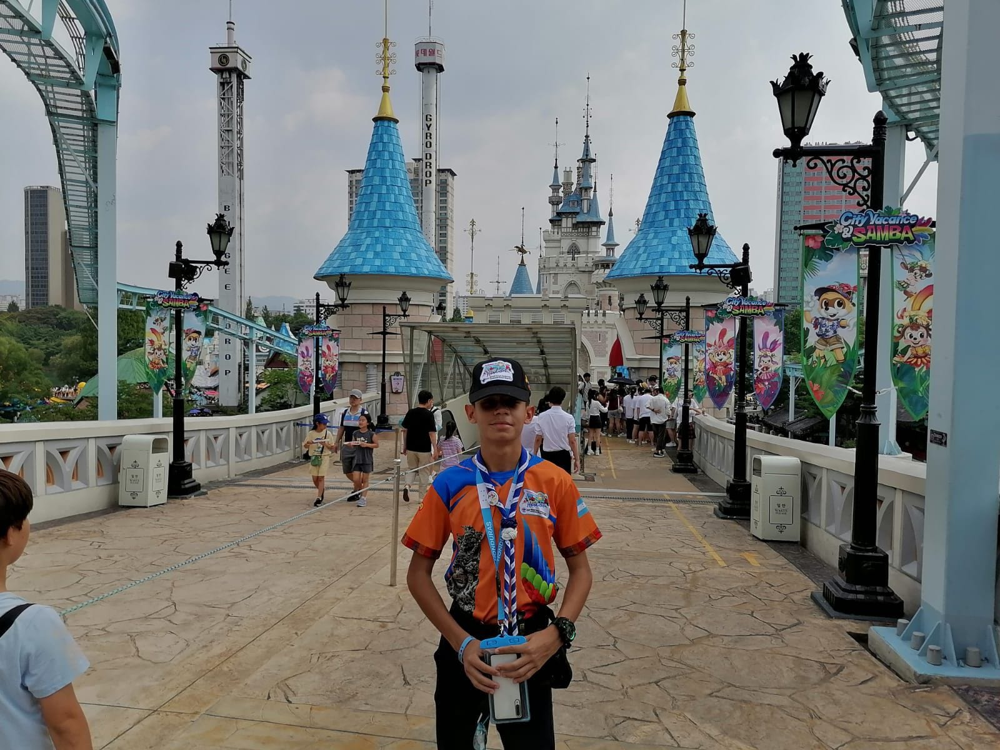
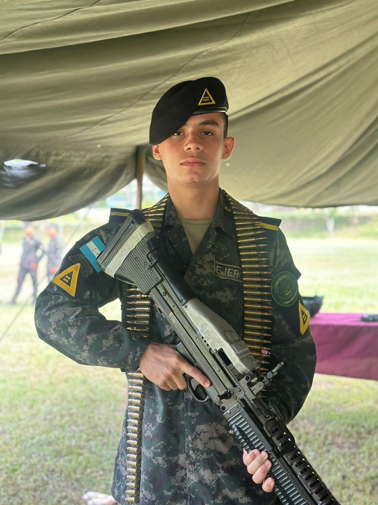

Acerca de mí

Hola, soy Carlos Samuel Burgos Durón, tengo 17 años y estudio en el Liceo Militar de Honduras. Me apasiona la programación, la tecnología y formo parte de los Scouts de Honduras. Actualmente curso la carrera de Informática en 3 BTPI.
Mi experiencia en el movimiento Scout ha sido una de las más valiosas de mi vida. Desde mis inicios en la manada hasta mi actual etapa en el Clan, he vivido aventuras, aprendido valores como el servicio, el liderazgo y el trabajo en equipo. He tenido la oportunidad de representar a mi grupo en eventos nacionales e internacionales, fortaleciendo mi compromiso con la comunidad y creciendo como persona. Ser Scout me ha enseñado a nunca rendirme y a dar siempre lo mejor de mí.
Mi formación en el Liceo Militar de Honduras ha sido una experiencia transformadora que ha fortalecido mi disciplina, responsabilidad y compromiso. A través de una educación integral y un ambiente de respeto, he aprendido a superar desafíos, mantenerme enfocado en mis metas y desarrollar liderazgo en todos los aspectos de mi vida. Esta etapa ha sido clave en mi crecimiento personal y académico, preparándome para enfrentar el futuro con determinación y valores sólidos.